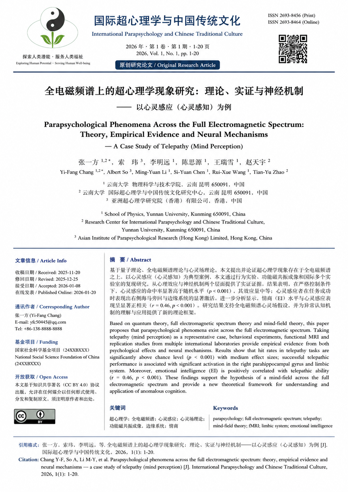

世界超心理學的比較研究和中華超心理學特色
張一方
雲南大學物理系，昆明，650091
摘要：國內外超心理學研究由來已久，由此探討了現代中外超心理學研究的某些特點，並比較了中外研究方法和領域的異同。進而具體探索了量子超心理學和地震預測，提出超心理學和人類社會的身心靈三維世界。超心理學作為一種新興科學必然是普適的，但對每個個體又是不同的。中華超心理學應當發揮自己的優勢，取長補短，為弘揚中華傳統文化，為發展世界超心理學，做出我們華人的偉大貢獻。
關鍵字：超心理學，方法和領域，中外，比較和異同，量子，身心靈三維世界
【作者簡介】張一方，1947年生，雲南大學物理系教授，國際華人超心理學會副理事長，國際現代理論物理雜誌(International Journal of Modern Theoretical Physics, USA)，物理科學和生物物理雜誌(Physical Science & Biophysics Journal)等編輯，雲南中華周易研究會顧問，雲南大學人體科學研究室第二任主任(1999-)，昆明UFO研究會名譽理事長等。1976年至今已在國內外發表學術論文526篇，其中超心理學和傳統文化方面的文章60多篇。主編兩本《中國傳統文化與超心理學研究》。
The Comparative Study of World Parapsychology and Characters of Chinese Parapsychology
Yi-Fang Chang
Physics Department, Yunnan University, Kunming, 650091
Abstract: The study of parapsychology has a long history. We search some characteristics of modern parapsychology, and compare the similarities and differences on methods and fields between Chinese and foreign research. Furthermore, we specifically explore quantum parapsychology and earthquake prediction, and propose the three dimensional body-mind-spirit worlds on parapsychology and human society. Parapsychology as a new science must be universal, but different for each individual. Chinese parapsychology should give full play to its own advantages, learn from each other, and make great contributions to the development of traditional Chinese culture, and develop the world parapsychology.
Key words: parapsychology, methods and fields, comparison, similarities and differences, China and foreign countries, quantum, three-dimensional body-mind-spirit world.
1.中外超心理學歷史概述
回顧歷史，國內外超心理學研究由來已久。中國從《史記》中記載的殷商王武丁(約公元前1271-1213在位)夢中發現名相傅說，周文王占卜發現姜子牙都是著名的超心理學事例。對此1998年由陳濤秋編著的《人體潛能史例選》分類為超感知覺，意念奇效，腦際遙感，預警預知等。他的統計表明，中國的超心理學現象和研究從遠古的夏商周到明清數千年延綿不絕[1]。趙斌系統研究了三國時期的超心理學事例。國外從《聖經》“馬可福音”中的記載、基督教的聖人到眾多的歷史都反映出超心理學現象源遠流長。筆者就初步探討了古希臘的超心理學及與古代中國相關研究的比較[2]。
2.當代中外的某些超心理學研究
國外正式的學術研究開始於英國1882年2月20日成立的超心理學會會(Society for Psychical Research)，首任理事長是劍橋大學教授西奇威克。至2026年已經144年。對早期的研究，D.布魯姆(Blum)出版過生動的專著《獵魂者(Ghost Hunters)》[3]。
據我們不完全的統計全世界大約有50多個國家具有超心理學的研究組織，特別是發達國家，如英、美、德、俄、日、法、意及加拿大、澳大利亞、印度、巴西、阿根廷、墨西哥、歐洲的許多國家，如荷蘭、丹麥、西班牙、奧地利等。最近越南都開始研究超心理學。日本的超心理學研究開始於1904年，民間學術團體目前統計有數百個。而且日本從中國挖走了許多著名的特異功能人。其中美國超心理學會1969年正式成為美國科學聯合會成員。從此超心理學被全世界許多國家肯定為一門新興的學科，學術地位也正式被認定。因為超心理學具有非常重要的意義和許多潛在的應用價值。
國際上相關研究的主要機構是大學和研究所，除劍橋大學始終是國際上最重要的超心理學研究中心之一，其餘如世界聞名的斯坦福大學、普林斯頓大學、耶魯大學、聖彼德堡大學、愛丁堡大學、加利福尼亞大學等。在蘇俄研究超心理學方面的大學有 32 所。
迄今已經有15位諾貝爾獎獲得者，參加過超心理學研究。許多大科學家，如量子力學的奠基人之一Schrödinger研究過心和物[4]。1973年諾貝爾物理獎獲得者Brian D. Josephson是心物統一計畫的主任。1977年諾貝爾化學獎獲得者和耗散結構的創立者I. Prigogine一直非常欣賞超自然體驗的神秘。最後還對他的學生說，如果我現在是一名年輕的研究者，我會研究身心問題。這是21世紀的巨大挑戰。
作為當代蓬勃發展的前沿科學，全世界主要國家都開展了豐富多彩的研究，並且取得了許多新結果。西方主要研究普通人中的統計性結果，如美國杜克大學的萊因博士(J.B. Rhine，1895-1980)從上世紀30年代開始提倡嚴謹的“微觀統計偏差效應”實驗室研究方法，試圖將實驗超心理學帶入正統科學的範疇。德國物理學家施密特博士(Helmut Schmidt, 1928-2011)提出並致力於發展以意識影響預先記錄的隨機序列為基礎的實驗方法，為推進微觀效應研究的終極嚴密性，從邏輯上根除一切作弊可能的無存疑倒置因果(retrocausality)後觀察意念致動實驗。這被廣泛認為是超心理學史上最嚴格的應用科學方法進行特異現象研究的里程碑式的成果。近年荷蘭阿姆斯特丹大學和Groningen大學教授，荷蘭超心理學會會長Dick J. Bierman等的論文“檢驗‘倒置因果關係’現象中的潛在悖論(Testing the Potential Paradoxes in “Retrocausal” Phenomena)”[5]就是具體應用類似方法。這些西方超心理學的主流研究方法非常值得我們借鑒。
中國主要研究特殊人的超心理學，即他們或她們的特異功能。中國現代的相關研究起源於1979年3月四川報導的耳朵認字，以後曾經盛極一時，形成熱潮，但結果褒貶不一、大起大落。對於20年轟轟烈烈的人體科學探索，許多人已經做出系統總結。其實現代神經生物學已經證明存在感知視覺和動態視覺兩套系統，大腦的一半都與視覺有關，並且表明人們看物體，不僅僅用眼睛，而是用整個大腦，由此可以用其他感覺代替眼睛[6]。例如極限攀岩運動員Eric Weihenmayer不僅是一個百萬富翁，而且更神奇的是一位盲人。當年令人驚訝的非眼視覺的“特異功能”已經完全可以由現代科學證實。對此筆者提出一種假設：可激發的神經細胞在不斷受到誘導和激發時，可能產生新的樹突和觸突，由此連接視覺系統和其他感覺系統，突破原來彼此完全獨立的各種感覺系統，形成新的神經網路。進而提出對該假設的某些可能的檢驗方案[7,8]。這就是觸突和腦的可塑性，也是非線性整體生物學[7]一種可以檢驗的應用，是佛教中一種最初步的六根互用。
迄今根據我們雲南大學人體科學研究室47年實驗、觀察、研究的結果，可以肯定某些超心理學的事實是存在的。這包括非眼認字、識圖，例如我們培訓兒童和盲童的結果；某些PK和空中取物，如楊德貴；某些透視功能等等。
臺灣大學原校長、電機工程系教授李嗣岑是當代全球華人超心理學研究的主要領軍人物之一，他的研究不僅引出與宗教有關的思考，而且培養出可以和動物對話的特異功能人。此外，臺灣的許多學術機構也從事相關的實驗和研究。
我們認為相關研究必須與當代世界的科學研究接軌，必須與中國傳統文化結合。2011年10月23-24日在昆明召開的“中國傳統文化與超心理學”學術研討會是一次成功的會議。會後由世界圖書出版公司彙集相關論文出版的《中國傳統文化與超心理學研究》，承蒙1973年諾貝爾物理學獎獲得者、劍橋大學教授、著名物理學家Brian D. Josephson同意，他的大作《弦論,宇宙心和超常現象》作為第一篇文章。此書是在中國大陸正式出版的第一本超心理學方面的學術著作，已經郵寄世界許多著名的圖書館，並在SCI收錄的國際雜誌《量子神經生物學(NeuroQuantology)》2012年發表了書評“Chinese Traditional Culture and Research of Parapsychology”[10]。2016年12月《世界科學探索學會雜誌(World Institute for Scientific Exploration Journal)》再次發表了該書評[11]。
現在由香港城市大學教授蘇廷弼和香港林永麗聯合雲南大學教授張一方在香港重新註冊成立了“國際華人超心理學會”。2016年11月19-21日由國際華人超心理學會主辦，雲南超心理學會具體承辦，在有關方面的大力支持下，在昆明召開了“中華傳統文化與超心理學第二屆學術研討會暨國際華人超心理學會2016年學術會議”。會議正式代表216人，加上列席的聽眾可能多達300餘人。由於國內廣大研究者和許多海外學者的熱烈回應和積極支持，會議取得了空前圓滿的結果。因為會議基於上下幾千年的中華傳統文化，和國際上正在蓬勃發展的超心理學，所以吸引了眾多高水準的專家學者，同時又為更多的研究探索者提供了一個廣大的時空平臺。基於此次會議的資料集，2018年由中國數圖出版傳媒集團正式出版《中華傳統文化與超心理學研究：2016昆明》。
我們計畫開展一系列的研究，包括盲童和一般兒童及成人的潛能培訓、佛道易、氣功、中醫和民族醫藥、心物統一和身心靈健康、自然災害預測、風水、超自然現象調查、瀕死現象、藝術領域、民族文化等各方面。我們的宗旨是把中國優秀的傳統文化推向世界，同時為努力促進世界的超心理學發展做出我們華夏子孫力所能及的貢獻。
3.中外超心理學研究的比較及異同
超心理學作為當代世界科學發展的前沿之一，主要包括各種特異感知，超感官知覺(ESP)，思維傳感(thought transference)，特異致動(PK)，遙視(clairvoyance)，預知(precognition),傳心術(telepathy)，瀕死體驗(near-death experience)等目前通常的科學無法解釋的各種現象。目前國外的研究主要以現代高技術探測手段對被試者的意識及生理狀況進行監測和實驗研究，偏重於對一般人展開統計性研究，最常用的是心理學方法。
目前中國大陸的研究領域主要是以中國傳統哲學中“人天相應”、“天人合一”為基本指導，以傳統的人天智慧、心性科學和中醫學理論為基礎，研究特異功能、氣功和各種奇異現象，方法是對功能人、修煉者和青少年進行重點實驗和培訓，由此進行各種測量和驗證。査樂平博士1991年和2001年在國際上介紹了中國的超心理學和人體科學研究[12,13]。2017年筆者也在超心理學百科全書(Psi Encyclopedia)中介紹了中國的某些相關研究[14]。
最近我們還探討了中國和世界超心理學研究的異同及中國的某些特點[15]。中外研究的ESP和PK等方面是相同的。遙視、傳心術、預知、超越空間-時間的遙感、催眠及超心理學和心理學、UFO的關係，中外研究相同。孫儲霖的思維照相(thoughtography)也非常成功。民間也探索靈魂(spirit)問題。而中國的瀕死現象和心靈治療(psychic healing)研究迄今仍存在不足。
當代國際上的一些研究重點是非常值得我們關注和借鑒的。其中人-機相互作用已經取得一些公開的進展。如果其可以影響各種控制系統，則應用前景將具有非常大的意義。義大利Padova大學教授Patrizio Tressold等進行了190公里距離心-物相互作用的系列實驗[16]。美國研究由意念場降低犯罪率。英國威爾斯醫學院高級講師、《超心理學評論》編輯Robert Charman研究了超心理學預測，不僅用現代科學儀器證明存在生理學的預感，並提出存在兩種現實、時間的四個自由度等非常具有啟發性的觀念[17]。意念對DNA的影響，由此聯繫于心身健康。目前禪修已經風靡世界，美國前總統克林頓退休生病後也請人專門指導禪修。
蘇廷弼教授研究的科學風水是中華傳統文化和現代科學相互結合的典範[18]。邵鄰相教授提出建立認證氣功外氣存在性科學實驗的必要性[19]，並且用實驗證實氣功外氣能夠抑制動物體內腫瘤的生長和直接殺傷體外培養的癌細胞[20]。
目前在昆明已經形成多個彼此聯繫又互不相同的研究團隊。其中主要成果包括：
從2012-2017年由筆者主持，用一般的科學記憶方法結合中國的某些傳統，如調心、調息、佛教、氣功等，對52人次的盲障兒童進行了各種潛能的開發培訓，取得了某些結果和經驗。我們的培訓得到社會的廣泛支持、關懷和一致讚譽。2014年以後國內某些地方也開始了相似的盲障兒童培訓，我們派人參加了武漢、南京的培訓。2016年8月1-7日在北京舉辦的“雛鷹明眸智慧開發”夏令營，特別邀請我們組成團隊，到北京參加潛能開發。我們不僅應用了多年潛能開發培訓的方法，而且帶去的兩名兒童(其中一人也是盲障兒童)，可以在戴眼罩的條件下，準確辨認撲克牌的花色和點，以及各種色卡，為其他兒童取到重要的示範、引導作用。進一步，我們帶去的兒童還顯示出更神奇的功能，X.N.金成功進行了一次意念搬運，把一樓的鑰匙搬運到二樓的辦公室；可以和盲童天使漫遊“虛擬世界”。我們的努力獲得了各方的肯定，組織方送給我們派去的老師每人一個感謝牌：感謝蒞臨指導“嘉惠盲童無私奉獻和鼎力支持，使孩子們受益良多”，兒童家長送給我們一面錦旗：“禪道雙修，功德恩厚”。2017年我們培訓的盲障兒童僅有7位，但取得了一些新的進展：我們主要採用引導盲障兒童進入安靜專注狀態後，在牛皮紙信封中辨認撲克牌等的方法。其中1位種子兒童不僅可以準確辨認所有撲克牌，而且可以多次準確辨認單面圖形，甚至雙面多色圖形，這反映出典型的全息性；此外他還進行了一次成功的PK搬運，憑意念把三樓住房的數字片搬運到二樓教室的空紙杯下。其餘還有4位兒童可以或多或少地辨認出撲克牌的花色、點數，最高準確率次數可達80%[4,21,22]。
進一步，我們提出一個可以檢驗的假設：能夠激發的神經細胞在不斷誘導和激發下可以生長出新的觸突和樹突，並且觸覺系統，聽覺系統，嗅覺系統等可以連接到視覺系統，形成新的神經網路，最後達到視覺和別的感覺系統互相轉換。我們還提出某些可能的檢驗，如科學家可以培訓盲的動物，然後解剖它們的大腦，比較它們不同的功能和結果。如果這一假設被證實，它將有益於人類，特別是殘疾人。這是典型的神經元可塑性[7,8]。這是佛教中眼耳鼻舌意的六根互用和各種神通[23,24]。實際上，超心理學中的許多現象作為特異功能並不奇怪，在道教、基督教、伊斯蘭教和某些宗教中都有許多類似描述。
我們多年始終堅持對兒童潛能的培訓，並且取得了許多聞名全國的結果，如超感官認字和圖片、特異移物、書寫等。2016年和2017年以覃宏、張文華為培訓部正副主任的青少年潛能培訓班，引導開發的潛能得到令人驚訝的結果，包括在火柴杆上寫字(圖1)。進而覃宏結合道家功法探索對成人的潛能開發。
圖1.兒童在火柴杆上寫的字
根據雲南大學人體科學研究室多年以來一直進行的培訓經驗，多數兒童隨著年齡增大，功能都會減弱，甚至完全消失。我們的經驗是必須強調以德為先，注重培養青少年的優秀傳統文化思想，否則可能會害人害己。同時，修身養性，防病救人也是我們的研究方向之一。
筆者認為對超心理學的研究方法只能歸納入三個大的系統：現代科學、傳統文化、宗教[23]。基於現代科學，結合量子理論，1983年4月筆者在昆明召開的全國人體功能態科學討論會上正式提出意念場及其基本公式EMBED Equation.3，其中H是待定係數， EMBED Equation.3 是意念場的頻率，其可以強或弱，專一或雜亂。由此可得4種基本功能態。意念場[25-27]應該是一種新的相互作用。
除此之外，超心理學還可能是高維時空和新世界。我們還提出超心理學是可以感知和探測新的資訊，例如X.N.金可以看見紅外線[28]。這四方面是彼此相關的，並且顯示存在兩種場：人體的意念場和外部資訊場。這是心和意識的發展，也聯繫於新的場和波。由此可以探測各種資訊場，並且新的資訊場也可以形成一個新的空間。
中外超心理學研究應該成為現代研究的一體兩翼，取長補短，互相補充。
4. 量子超心理學和地震預測
我們提出超心理學的物理定義：一個不可見不清晰的場變出可見的宏觀效應[29]。如此它的一個主要的描述工具是物理學，特別是現代量子理論。這是一個可測量、可預測和可檢驗的定義。
現代科學發現，生命基礎本質上是量子力學的[30]。眾所周知，在超心理學中，實驗是很難重複的，其遵循量子理論的不確定性和不可預測性。我們提出超心理學的泛量子理論，並且探討了可能的檢驗[31,28]。它決定超心理學的概率和統計性。同時，這也說明當前的超心理學理論是不完備的。更普遍地說，超心理學也符合玻爾互補原理(Bohr complementarity principle)，即統計性和典型案例相互補充。頻率越高，能量越高，對時空的確定性越高，概率就越小；相反，低能量的時空不確定性越大，概率就越大。進一步，我們研究了它具有波粒二象性的十種可能的核對總和猜想等。在心靈-物質的統一中，心靈對應波和場，物質對應粒子。
現代神經生物學表明神經系統一般不是完全穩定的，腦的一個特點是它的個別性和多變性，因此沒有理由要求超心理學和人體科學的各種實驗必須精確地完全重複[32]。新的相互作用場[25-27]應該是我們探索的一個重點。許多超心理學實驗表明可能存在新的另外空間。而現代科學具有豐富的多世界理論。基於此筆者提出複流形新空間的一種數學方法——Kahler幾何，其作為一類特殊的Riemann流形，可以為超心理學新空間的深入研究提供廣闊的視野[32]。由此拓撲變換可以分為兩類：連續的，如意念力彎曲勺；不連續的，如PK折斷火柴杆等。進一步，這可以聯繫於一般的複變函數，其中複平面的橢圓函數是一個亞純函數[33]，並且具有雙週期：
EMBED Equation.3. (1)
其中 EMBED Equation.3 和 EMBED Equation.3 是二個不同的基本週期。這似乎可以描述超心理學中的預測、遙感等。它包括 Weierstrass橢圓函數：
EMBED Equation.3 . (2)
由此聯繫于多連通拓撲學和可以描述死後“靈魂”的蟲洞模型[34]。此外，新空間也可能與一般空間形成對偶空間．
基於流體動力學的非線性方程，我們導出了簡化的非線性解和混沌方程，其中混沌對應於地震。這表明了地震學的複雜性，及地震精確預測的不可能性。但結合Carlson-Langer模型和Gutenberg-Richter關係，我們可以推導出地震的震級-週期公式
EMBED Equation.3 . (3)
這樣某些預測可以定量計算。
California是一個多地震區域，但大地震仍然不是太多。根據上述震級週期公式，在2003年我們預測未來的地震將發生在2009年，2014年和2019年。迄今為止，地震（M=6.9）發生在2009年8月3日，M=6發生在2014年8月24日。此外，我們取週期T=33，2019年的大地震更可能發生[35,36]。結果2019年，加州發生了7月4日M=6.4和7月5日M=7.1的兩次大地震。這表明地震可以初步預測，也可以簡單計算。此外，地震預測結合不同的方法[35-37]：各種現代科學儀器，不同的科學理論及超心理學、易經(太乙)、特殊功能和動植物等，將能夠提高預測的準確性。
超心理學研究不僅有可能產生新科學的生長點，如由其他感覺代替眼睛，而且對國計民生也許有重大啟發和意義，如遙感、預知結合易經可以用於地震[35-37]，並且應用超心理學等研究和預測各種自然災害。在這方面中國不僅古已有之[1]，而且可以做出重大貢獻。
5. 人類社會的身心靈三維世界
基於多年來對超心理學中各種現象的研究，我們提出關於人類社會的身心靈三維世界(圖2)。這是隱含了許多中國和世界的古代現象，各種宗教，一些神奇的因果關係，許多奇怪的刑事案件中的殺人現象，世界各地的鬼屋和轉世等[38-40]。
圖2 三維身心靈空間
通常的世界是一個伴隨權利和財富的身體-物質世界。其最大的是皇帝和富人；B=0是普通平民；其下B<0是窮人和“不可接觸的賤人”。
第二個維度是具有道德和聲譽的思想-意識世界。M>0都是好人，最高的是聖賢；M=0是具有動物本性的凡人；下麵M<0是流氓，罪犯，說謊者。中國傳統文化中的陰陽對應著身心狀況。
第三個維度是精神-神靈世界。S>0是不同級別的神，S<0是不同級別的惡魔和鬼魂。S=0是無神論。它也對應于最高的天堂和最低的地獄。這是外太空，也是一個新的空間。這是無法控制的，也是難以研究的，儘管它與人性的誘導有關。但是，困難在於它們的頻率似乎是可變的。這正好相應於量子的測不准原理。
三維可能相互糾纏，特別是物質和心靈-精神相互影響，可以產生奇異效果，如波爾代熱斯(Poltergeist)現象。甚至能夠對身體-物質世界造成巨大的損害。大的物質-身體和巨大的消極思想結合在一起形成了歷史上一些大暴君，如希特勒等。
基於現代科學，我們探討了“靈魂”的某些可能的數學-物理模型[41]，這也是死後的未來。我和蘇博士還探討了超心理學可能存在的全波段電磁波譜[42]。
6.超心理學研究的疑難和展望
超心理學現象五花八門，非常普遍[43]，因此其研究起點較低，這為大眾的參與提供了可能，也給形形色色的投機者、謀利者甚至騙子提供了機會。現代社會學術討論和爭論都是正常的。但是我們堅決反對那些完全不顧事實，全盤否定超心理學現象的人[44-46]。
總之，超心理學研究具有兩個方面和層次：1.現象和實驗的積累和總結。這必須儘量嚴格。2.機理和理論的探索。這裏沒有權威，當然也沒有指導。其實所有新學科都如此！我們提出非線性整體超心理學及其數學-物理方法[47]，探討了未來社會可能是科學-宗教-超心理學的結合[48]。
超心理學作為一種新興科學必須如物理、化學等一樣是普適的、世界通用的；但是它又如同生物、醫學一樣，對每個個體是有所不同的，這又是它的複雜性。
世界各國的研究方法雖存在差別，但一定是殊途同歸，匯入人類共同的海洋。中華超心理學的發展不能閉門造車，自絕於世界；當然也不應該亦步亦趨，人云亦云，而應當充分發揮自己的優勢，克服我們的不足，取長補短，為弘揚中華傳統文化，把其推向世界，同時為努力促進世界超心理學發展做出我們華人應有的偉大貢獻。
參考文獻
[1]陳濤秋編著,《人體潛能史例選》.上海交通大學出版社.1998.
[2]Yi-Fang Chang, Mathematics and parapsychology in ancient Greek and China, Yi and modern society. International Journal of Modern Social Sciences. 2017, 6(2):116-127.
[3]D.布魯姆(Blum),獵魂者(Ghost Hunters).於是譯.人民文學出版社.2008.
[4]E. Schrödinger, Mind and Matter. Cambridge University Press. 1958.
[5]Dick J. Bierman等,檢驗“倒置因果關係”現象中的潛在悖論.《中華傳統文化與超心理學研究2016昆明》.中國數圖出版傳媒集團.2018.p36-47.
[6]Yi-Fang Chang, Zhi-Qiang Zhang, Wen-Hua Zhang, Hong Qin, Tao Shen, Jian-Hua Deng, Potential of blind children and general children. World Institute for Scientific Exploration (WISE) Journal. 2016, 5(4):72-76.
[7]Yi-Fang Chang, A testable application of nonlinear whole neurobiology: Possible transformation among vision and other sensations. NeuroQuantology. 2013,11(3): 399-404.
[8]Yi-Fang Chang, Human potential and possible tests of transformations among vision and other sensations. World Institute for Scientific Exploration (WISE) Journal. 2017, 6(1):35-40.
[9]Yi-Fang Chang, Nonlinear whole biology and loop quantum theory applied to biology. NeuroQuantology. 2012, 10(2):190-197.
[10]Yi-Fang Chang, Chinese Traditional Culture and Research of Parapsychology. NeuroQuantology. 2012,10(4):765-767.
[11]Yi-Fang Chang, Chinese Traditional Culture and Research of Parapsychology. World Institute for Scientific Exploration (WISE) Journal. 2016, 5(4):134-136.
[12]Leping Zha and Tron McConnell, Parapsychology in the People’s Republic of China. The Journal of American Society for Psychical Research. 1991,85:119-141.
[13]Leping Zha, Review of History, Findings, and Implications of Research on “Exceptional Functions of Human Body” in China. Bridging Worlds and Filling Gaps in the Science of Healing. Hawaii. 2001.p177-202.
[14]Yi-Fang Chang, Psi research in China. Psi Encyclopedia. 2017.
[15] Yi-Fang Chang, The comparative research of China and world parapsychology, and some characters of Chinese parapsychology. UKR Journal of Multidisciplinary Studies (UKRJMS). 2026,2(1):10-17.
[16]P. Tressold等,190公里距離的心-物相互作用：關於隨機事件發生器用截止方法的效應.《中華傳統文化與超心理學研究2016昆明》.中國數圖出版傳媒集團.2018.p28-35.
[17]R. Charman, 超心理學的生理學預感：實驗室中的實驗表明未來個人經驗的預測生理預期.《中華傳統文化與超心理學研究2016昆明》.中國數圖出版傳媒集團.2018.p59-65.
[18]蘇廷弼, 科學的風水和在洛書研究中應用線性代數.《中華傳統文化與超心理學研究2016昆明》.中國數圖出版傳媒集團.2018.p174-181.
[19]邵鄰相,建立認證氣功外氣存在性的科學實驗. 《中國傳統文化與超心理學研究》.世界圖書出版公司.2012.p60-68.
[20]邵鄰相,氣功外氣水殺菌抑癌作用的體外實驗性研究. 《中國傳統文化與超心理學研究》.世界圖書出版公司.2012.p60-84.
[21]張一方,張志強,張文華,沈濤,鄧建華,2012以來昆明盲障兒童潛能培訓總結和研究.World Institute for Scientific Exploration (WISE) Journal. 2017,6(3):132-139.
[22]Yi-Fang Chang, Zhi-Qiang Zhang, Wen-Hua Zhang, Hong Qin, Tao Shen, Jian-Hua Deng, Psi potential of children. Paranormal Review. 2020, 96:22-23.
[23]張一方,意念場、超心理學的三種研究方法和可能的三種新結果.《中國傳統文化與超心理學研究》.世界圖書出版公司.2012.p12-20.
[24]Yi-Fang Chang, Development of neural networks in the brain, and their possible evolution. International Journal of Independent Research and Studies. 2025,14(1):44-53.
[25]張一方,特異功能與生物意念場.洪定國主編:《科學前沿中的疑難與展望》第一版.湖南科學技術出版社.1988.p357-365.
[26]Yi-Fang Chang, Living beings and the thought field. The Journal of Religion and Psychical Research. 2003, 26(2):98-102.
[27]Yi-Fang Chang, Experimental tests of the thought field, the extensive quantum theory and quantum teleportation. The Journal of Religion and Psychical Research. 2004,27(4):190-199.
[28]Yi-Fang Chang, Fourth new result of parapsychology and its extensive quantum theory and possible ten tests. World Institute for Scientific Exploration (WISE) Journal. 2020,9(1):52-62.
[29]Yi-Fang Chang, Four possible mathematical-physical models of “soul” and the thought field. World Institute for Scientific Exploration (WISE) Journal. 2018,7(2):84-92.
[30]Tony Hey, P. Walters, The New Quantum Universe. Cambridge University Press. 2003.
[31]Yi-Fang Chang, Extensive quantum theory of parapsychology and its tests. World Institute for Scientific Exploration (WISE) Journal. 2018, 7(3):72-80.
[32]張一方,超心理學中實驗的難重複性,多世界理論和新相互作用.《中華傳統文化與超心理學研究2016昆明》.中國數圖出版傳媒集團.2018.p12-21.
[33]S. Lang, Elliptic Functions. Second Edition. Springer-Verlag. 1987.
[34]張一方,禪定,超心理學的熱力學和死後“靈魂”的數學-物理模型.《中國傳統文化與超心理學研究》.世界圖書出版公司.2012.p172-177.
[35]Yi-Fang Chang, Three ways of earthquake prediction. The Journal of Religion and Psychical Research. 2004,27(3):126-130.
[36]Yi-Fang Chang, Chaos, magnitude-period formula of earthquakes and their multilevel prediction. World Institute for Scientific Exploration (WISE) Journal. 2017,6(2):51-59.
[37]Yi-Fang Chang, Nonlinear whole seismology, topological seismology, magnitude-period formula of earthquakes and their predictions. World Journal of Geomatics and Geosciences. 2021,1(1):1-10.
[38]Yi-Fang Chang, Three dimensional body-mind-spirit worlds on human society, social fields and Chinese cultural-social ecology. Sumerianz Journal of Scientific Research. 2020,3(12): 156-165.
[39]Yi-Fang Chang, Three dimensional body-mind-spirit worlds on parapsychology and human society, and preliminary classification. World Institute for Scientific Exploration (WISE) Journal. 2021, 9(2):32-40.
[40]Yi-Fang Chang, Three dimensional body-mind-spirit worlds in human society, and extensive quantum theory in theology. American Journal of Humanities and Social Sciences Research (AJHSSR). 2024, 8(7): 119-128.
[41]Yi-Fang Chang, Four possible mathematical-physical models of “soul” and the thought field. World Institute for Scientific Exploration (WISE) Journal. 2018,7(2):84-92.
[42] Yi-Fang Chang, Albert So, Full electromagnetic spectrum of parapsychology. ISRG Journal of Arts Humanities & Social Sciences (ISRGJAHSS). 2025,3(6):260-263.
[43] R. Hyman, A critical historical overview of parapsychology. In: A Skeptic’s Handbook of Parapsychology. Edited by P. Kurtz. New York: Prometheus Books. 1985. 3-96.
[44]J. Randi, The Truth about Uri Geller. New York: Prometheus Books. 1982.
[45]J. Randi, The Faith Healers. New York: Prometheus Books. 1987.
[46]T. Hines, Pseudoscience and the Paranormal (2nd ed.). New York: Prometheus Books. 2003.
[47]Yi-Fang Chang, Nonlinear whole parapsychology and its mathematical-physical methods. Sumerianz Journal of Social Science. 2024, 7(3):31-40.
[48]Yi-Fang Chang, Future society: science, religion and parapsychology. Sumerianz Journal of Social Science. 2021,4(3):93-99.